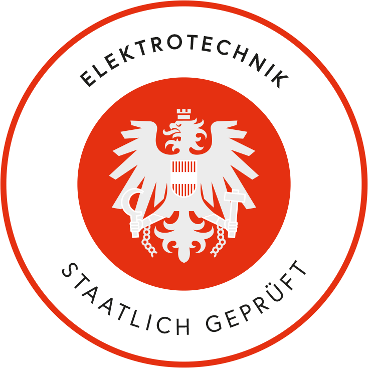

Elektroinstallationen
Installation, Erweiterung und Sanierung von Elektroanlagen in Neubau und Bestand – fachgerecht, normgerecht und sauber ausgeführt.
Staatlich geprüfte Elektrotechnik in der Region Krems
Elektroinstallationen, Planung & Bauaufsicht sowie zertifizierte Energieberatung – sauber, normgerecht und zuverlässig

Installation, Erweiterung und Sanierung von Elektroanlagen in Neubau und Bestand – fachgerecht, normgerecht und sauber ausgeführt.
Durchdachte Planung Ihrer Elektroinstallation sowie örtliche Bauaufsicht und Kontrolle direkt auf der Baustelle.
Zertifizierte Energieberatung für effizienten Stromverbrauch und nachhaltige, zukunftssichere Lösungen in Ihrem Zuhause.